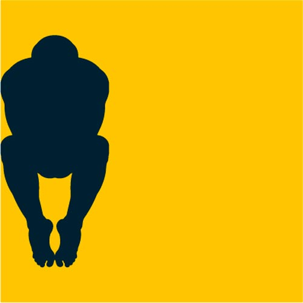

Details
Vernissage: 4. März 2011
Eröffnung: Georg Peithner-Lichtenfels und Gerhard Kahlhammer
Die Ausstellung war bis Ende Mai 2011 zu besichtigen.
Malerei und Keramik

Vernissage: 4. März 2011
Eröffnung: Georg Peithner-Lichtenfels und Gerhard Kahlhammer
Die Ausstellung war bis Ende Mai 2011 zu besichtigen.